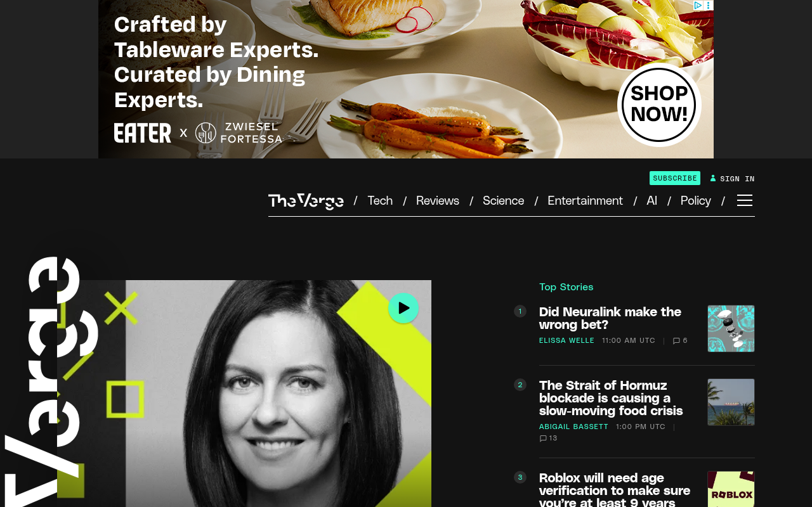

Design System Report
The Verge — 실제 CSS 기반 분석
theverge.com이 실제로 서빙하는 CSS에서 직접 추출한 디자인 토큰·타이포그래피·컬러 스펙. 보라(#5200FF)와 민트(#3CFFD0)의 2-색 브랜드 체계, 3종 폰트 레이어(UI·본문·디스플레이)를 정리했다.

Quick Start
5분 안에 The Verge처럼 만들기 — 3가지만 하면 80%
1 · 폰트 + weight
body {
font-family: "Poly Sans",
"Helvetica Neue",
Helvetica, Arial, sans-serif;
font-weight: 400;
}
2 · 다크 배경 + 텍스트
:root {
--bg: #131313;
--fg: #FFFFFF;
}
body {
background: var(--bg);
color: var(--fg);
}
3 · 브랜드 보라
:root {
--brand: #5200FF;
--accent-mint: #3CFFD0;
}
절대 하지 말아야 할 것 하나: 민트(
#3CFFD0)를 primary CTA 색으로 쓰는 것. 민트는 카테고리 태그·보조 악센트 전용이다. CTA·링크의 주인공은 보라(#5200FF)다.
Source
theverge.com
Next.js SSR
Fetched
2026.04.13
CSS auto-parse + manual
Primary Font
Poly Sans
weight normal = 400
Brand
#5200FF
보라 (CTA · 인터랙션)
01 · Provenance
출처와 수집 기준
URL · fetch 시점 · 파싱 방식.
Source URL
https://www.theverge.comFetched2026-04-13
Extractorcurl + Chrome UA (5-tier fallback)
Token prefix없음 (인-하우스, 비-토큰 방식)
Font hash
__polySans_9afc27, __fkRomanStandard_cfceed, __manuka_62afb5 (Next.js font)MethodCSS 커스텀 프로퍼티 직접 파싱 · frequency 분석 · AI 추론 없음
02 · Tech Stack
테크 스택
프레임워크, 디자인 아키텍처, 폰트 로딩.
FRAMEWORK
Next.js (SSR) —
__polySans_* 해시 클래스명으로 확인DESIGN SYSTEM
인-하우스 (토큰 prefix 없음) — utility + scoped module CSS
DEFAULT THEME
다크 퍼스트 — 배경
#131313, 섹션별 보라/민트 교차FONT LOADING
Next.js
next/font — Poly Sans · FK Roman Standard · ManukaTYPOGRAPHY LAYERS
UI(Poly Sans) + 기사 본문(FK Roman Standard) + 디스플레이(Manuka)
BRAND ANCHOR
#5200FF — 보라가 CTA·링크·인터랙션의 일관된 앵커색03 · Typography
타이포그래피
3-레이어 폰트 체계 — UI, 기사 본문, 디스플레이 헤드라인.
Font stack
UI 폰트
Poly Sans — Commercial Type, 유료 라이선스 · weight 400
기사 본문
FK Roman Standard — Florian Karsten, 유료 · serif · weight 400
디스플레이
Manuka — Klim Type Foundry, 유료 · Impact fallback · weight 900
Mono
Poly Sans Mono — 같은 패밀리 · Courier New fallback
Weight 정의
normal = 400 · bold = 700 · display = 900
라이선스 주의 — 세 폰트 모두 유료 라이선스. 오픈소스 대체재: UI →
Inter, 기사 본문 → Source Serif 4, 디스플레이 → Bebas Neue.
Typography Scale
뉴스
Display XL
Manuka · 72–96px · weight 900
line-height 0.95 · letter-spacing -0.02em
line-height 0.95 · letter-spacing -0.02em
섹션 헤딩
Section Heading
Poly Sans · 32–48px · weight 700
line-height 1.1 · letter-spacing -0.015em
line-height 1.1 · letter-spacing -0.015em
카드 타이틀
Card Title
Poly Sans · 18–22px · weight 700
line-height 1.25 · letter-spacing -0.01em
line-height 1.25 · letter-spacing -0.01em
본문 UI 텍스트
Body UI
Poly Sans · 15–16px · weight 400
line-height 1.6
line-height 1.6
기사 본문 텍스트
Article Body
FK Roman Standard · 17–18px · weight 400
line-height 1.75
line-height 1.75
CATEGORY
Caption / Meta
Poly Sans · 11–13px · weight 500
uppercase · letter-spacing 0.06em
uppercase · letter-spacing 0.06em
04 · Colors
컬러
2색 브랜드(보라 + 민트) + 다크 그레이 팔레트.
Brand Palette
CTA Purple#5200FF
Purple Hover#6B1FFF
Lavender#A980FF
Purple Tint#EEE6FF
Mint Accent#3CFFD0
Mint Alt#33FFD0
Deep Green#309875
Dark Neutral
Black#000000
Page BG#131313
Card BG#1A1A1A
Border#313131
Text Sec#4A4A4A
Muted#636363
Light#BDBDBD
Light / Status
Off-White#E9E9E9
White#FFFFFF
Live Red#EE0033
Lime#D6F31F
Semantic Roles
Page BG
#131313
body 기본 배경
CTA Primary
#5200FF
버튼, 링크 악센트
Accent Mint
#3CFFD0
카테고리 태그, 포인트
Live
#EE0033
속보 · LIVE 배지 전용
05 · Spacing
스페이싱
4px 베이스 그리드 — 명시적 토큰 없이 배수 사용.
xs4px
sm8px
md16px
lg24px
xl32px
2xl48px
3xl64px
4xl96px
06 · Radius
라디우스
뉴스 미디어 특성상 엣지 있는 디자인 — 최소 radius 사용.
none
0px
뉴스 카드
뉴스 카드
sm
2px
태그 배지
태그 배지
md
4px
버튼
버튼
lg
8px
이미지 컨테이너
이미지 컨테이너
pill
999px
카테고리 칩
카테고리 칩
07 · Shadows
섀도우
다크 배경 위에서 shadow 최소화 — 드롭다운·모달에만 사용.
dropdown
네비게이션 드롭다운
0 4px 20px rgba(0,0,0,.5)
modal
모달 · 오버레이
0 8px 40px rgba(0,0,0,.8)
08 · Motion
모션
빠른 hover 반응 + 콘텐츠 진입 애니메이션.
duration-fast
140ms
hover 상태 전환 (버튼, 링크)
duration-base
240ms
카드 트랜지션
duration-slow
400ms
섹션 진입 애니메이션
easing-standard
cubic-bezier(0.4,0,0.2,1)
대부분의 전환
easing-enter
cubic-bezier(0,0,0.2,1)
요소 등장 애니메이션
09 · Layout Patterns
레이아웃 패턴
12컬럼 그리드 기반 뉴스 미디어 레이아웃.
Grid System
- 12컬럼 기반, 최대 너비
1280px - 좌우 패딩:
clamp(16px, 4vw, 64px) - 데스크탑 4-col 뉴스 그리드
- 태블릿 2-col, 모바일 1-col
Hero
- Full-bleed 이미지 + 그라디언트 오버레이
- 텍스트: 좌하단 포지션 (desktop)
- 모바일: 이미지 위 텍스트 stack
Article Layout
- 메인 콘텐츠:
760pxmax-width - 사이드바:
280pxsticky 우측 - 기사 본문: FK Roman Standard serif
Section Alternation
- 다크(#131313) / 보라(#5200FF) / 민트(#3CFFD0) 섹션 교차
- 편집 테마에 따라 선택적 교차
10 · Components
컴포넌트
뉴스 카드, CTA 버튼, 카테고리 칩.
news-card
기사 목록 카드 — 이미지 + 카테고리 + 타이틀 + 메타
TECH
Apple announces something amazing this year
By Tom Warren · 2h ago
.news-card { background: #131313; border-bottom: 1px solid #313131; }
.category-tag {
font-size: 11px; font-weight: 700;
text-transform: uppercase; letter-spacing: 0.08em;
color: #3CFFD0;
}
.card-title { font-size: 18px; font-weight: 700; color: #FFFFFF; line-height: 1.25; }
.card-meta { font-size: 12px; color: #636363; }
배경 #131313경계 border-bottom 1px #313131카테고리 #3CFFD0 mint · 700 · uppercase타이틀 #FFFFFF · 700 · 18px메타 #636363 · mono · 12px
뉴스 카드는 shadow 없이 border-bottom만으로 구분하는 것이 The Verge 스타일.
btn-primary
CTA 버튼 — 보라 배경 + 흰 텍스트
.btn-primary {
background: #5200FF;
color: #FFFFFF;
font-size: 14px; font-weight: 700;
padding: 10px 20px;
border-radius: 4px;
transition: background 140ms;
}
.btn-primary:hover { background: #6B1FFF; }
배경 #5200FFhover #6B1FFF텍스트 #FFFFFF · 700반경 4px전환 140ms
category-chip
카테고리 pill — 상단 레이블 또는 필터
TECH
SCIENCE
AI
기본 bg #5200FF · color #fffscience bg #309875 · color #fffoutline border #3CFFD0 · color #3CFFD0반경 999px (pill)폰트 10px · 700 · uppercase
11 · Content Voice
라이팅 원칙
테크 저널리즘의 직접적·간결한 보이스.
헤드라인
간결·직접적. 최대 10단어. 동사로 시작.
"Google confirms Pixel 10 release date for October"
리드 문장
Inverted pyramid — 결론 먼저, 1문장 요약.
"Apple is launching its most powerful chip yet, and it changes everything about the Mac lineup."
섹션 레이블
전부 대문자 + wide letter-spacing.
TECH · SCIENCE · AI
CTA 문구
단순 동사형 — 설명 없이 행동만.
"Read more" / "Watch now" / "Subscribe"
12 · CSS · Tailwind
코드 익스포트
즉시 붙여넣기 가능한 CSS 변수 세트 + Tailwind 설정.
/* The Verge — Drop-in CSS */ :root { /* Brand */ --brand: #5200FF; --brand-hover: #6B1FFF; --accent-mint: #3CFFD0; --accent-green: #309875; /* Surface */ --bg: #131313; --bg-card: #1A1A1A; /* Text */ --fg: #FFFFFF; --fg-muted: #636363; --fg-secondary: #4A4A4A; /* Border */ --border: #313131; /* Status */ --live: #EE0033; /* Spacing (4px grid) */ --space-xs: 4px; --space-sm: 8px; --space-md: 16px; --space-lg: 24px; --space-xl: 32px; --space-2xl: 48px; --space-3xl: 64px; /* Radius */ --radius-none: 0px; --radius-sm: 2px; --radius-md: 4px; --radius-lg: 8px; --radius-pill: 999px; } body { font-family: "Poly Sans", "Helvetica Neue", Helvetica, Arial, sans-serif; font-weight: 400; background: var(--bg); color: var(--fg); -webkit-font-smoothing: antialiased; }
// tailwind.config.js — The Verge module.exports = { theme: { extend: { colors: { brand: '#5200FF', 'brand-hover': '#6B1FFF', 'accent-mint': '#3CFFD0', 'accent-green': '#309875', 'bg-base': '#131313', 'bg-card': '#1A1A1A', 'border-default': '#313131', 'text-muted': '#636363', live: '#EE0033', }, fontFamily: { sans: ['"Poly Sans"', '"Helvetica Neue"', 'Helvetica', 'Arial', 'sans-serif'], serif: ['"FK Roman Standard"', 'Georgia', 'serif'], display: ['Manuka', 'Impact', 'Helvetica', 'sans-serif'], mono: ['"Poly Sans Mono"', 'monospace'], }, borderRadius: { DEFAULT: '4px', sm: '2px', lg: '8px', pill: '999px', }, }, }, }
13 · Do / Don't
Do / Don't
The Verge 디자인에서 반드시 지킬 것과 피할 것.
✓ DO
- 보라(#5200FF)를 CTA·링크 인터랙션에 사용 — 브랜드 identity 핵심
- 민트(#3CFFD0)는 보조 — 카테고리 태그, 포인트 언더라인 전용
- 배경은 #131313 — pure black(#000)이 아닌 약간 따뜻한 near-black
- 헤드라인은 굵게 — Manuka weight 900 또는 Poly Sans weight 700
- 카드 구분은 border-bottom 1px — shadow 대신 라인
✗ DON'T
#3CFFD0를 primary 버튼으로 쓰지 않는다 — 보조 악센트 전용- 흰 배경 + 검정 텍스트를 기본으로 쓰지 않는다 — The Verge는 다크 퍼스트
- border-radius 8px 초과 과다 사용 금지 — 엣지 있는 뉴스 디자인
#EE0033을 브랜드 컬러로 오해하지 않는다 — LIVE 배지 전용- Poly Sans weight 300으로 쓰지 않는다 — 400 이상이 기준